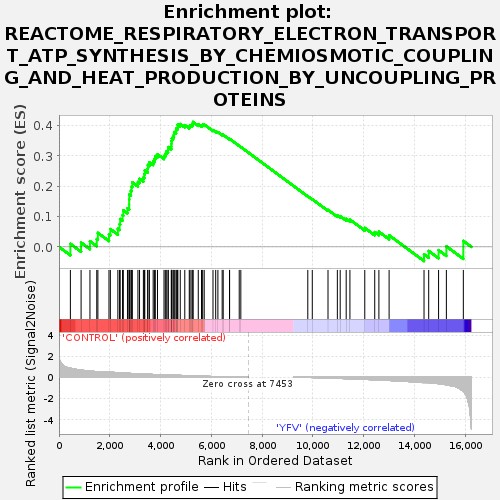
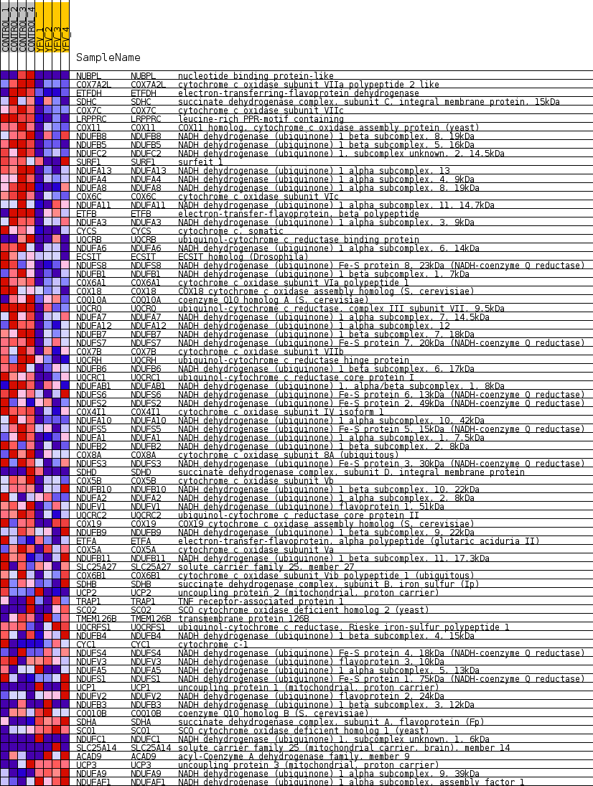
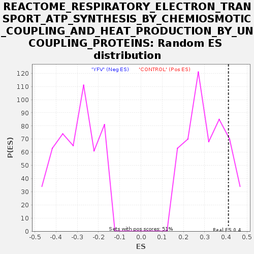

| Dataset | MATRIZ_GSE99081_collapsed_to_symbols.gsea_CLASE_99081.cls#CONTROL_versus_YFV |
| Phenotype | gsea_CLASE_99081.cls#CONTROL_versus_YFV |
| Upregulated in class | CONTROL |
| GeneSet | REACTOME_RESPIRATORY_ELECTRON_TRANSPORT_ATP_SYNTHESIS_BY_CHEMIOSMOTIC_COUPLING_AND_HEAT_PRODUCTION_BY_UNCOUPLING_PROTEINS |
| Enrichment Score (ES) | 0.4119991 |
| Normalized Enrichment Score (NES) | 1.3438717 |
| Nominal p-value | 0.1409002 |
| FDR q-value | 0.99759424 |
| FWER p-Value | 1.0 |

| SYMBOL | TITLE | RANK IN GENE LIST | RANK METRIC SCORE | RUNNING ES | CORE ENRICHMENT | |
|---|---|---|---|---|---|---|
| 1 | NUBPL | nucleotide binding protein-like | 448 | 0.855 | 0.0100 | Yes |
| 2 | COX7A2L | cytochrome c oxidase subunit VIIa polypeptide 2 like | 870 | 0.682 | 0.0141 | Yes |
| 3 | ETFDH | electron-transferring-flavoprotein dehydrogenase | 1219 | 0.591 | 0.0187 | Yes |
| 4 | SDHC | succinate dehydrogenase complex, subunit C, integral membrane protein, 15kDa | 1487 | 0.532 | 0.0257 | Yes |
| 5 | COX7C | cytochrome c oxidase subunit VIIc | 1531 | 0.524 | 0.0462 | Yes |
| 6 | LRPPRC | leucine-rich PPR-motif containing | 1968 | 0.488 | 0.0408 | Yes |
| 7 | COX11 | COX11 homolog, cytochrome c oxidase assembly protein (yeast) | 2022 | 0.480 | 0.0587 | Yes |
| 8 | NDUFB8 | NADH dehydrogenase (ubiquinone) 1 beta subcomplex, 8, 19kDa | 2318 | 0.438 | 0.0598 | Yes |
| 9 | NDUFB5 | NADH dehydrogenase (ubiquinone) 1 beta subcomplex, 5, 16kDa | 2385 | 0.428 | 0.0746 | Yes |
| 10 | NDUFC2 | NADH dehydrogenase (ubiquinone) 1, subcomplex unknown, 2, 14.5kDa | 2409 | 0.424 | 0.0920 | Yes |
| 11 | SURF1 | surfeit 1 | 2502 | 0.412 | 0.1045 | Yes |
| 12 | NDUFA13 | NADH dehydrogenase (ubiquinone) 1 alpha subcomplex, 13 | 2532 | 0.408 | 0.1207 | Yes |
| 13 | NDUFA4 | NADH dehydrogenase (ubiquinone) 1 alpha subcomplex, 4, 9kDa | 2696 | 0.383 | 0.1276 | Yes |
| 14 | NDUFA8 | NADH dehydrogenase (ubiquinone) 1 alpha subcomplex, 8, 19kDa | 2763 | 0.373 | 0.1399 | Yes |
| 15 | COX6C | cytochrome c oxidase subunit VIc | 2764 | 0.373 | 0.1564 | Yes |
| 16 | NDUFA11 | NADH dehydrogenase (ubiquinone) 1 alpha subcomplex, 11, 14.7kDa | 2768 | 0.372 | 0.1727 | Yes |
| 17 | ETFB | electron-transfer-flavoprotein, beta polypeptide | 2830 | 0.363 | 0.1849 | Yes |
| 18 | NDUFA3 | NADH dehydrogenase (ubiquinone) 1 alpha subcomplex, 3, 9kDa | 2859 | 0.358 | 0.1990 | Yes |
| 19 | CYCS | cytochrome c, somatic | 2888 | 0.354 | 0.2129 | Yes |
| 20 | UQCRB | ubiquinol-cytochrome c reductase binding protein | 3108 | 0.331 | 0.2140 | Yes |
| 21 | NDUFA6 | NADH dehydrogenase (ubiquinone) 1 alpha subcomplex, 6, 14kDa | 3171 | 0.323 | 0.2245 | Yes |
| 22 | ECSIT | ECSIT homolog (Drosophila) | 3323 | 0.307 | 0.2287 | Yes |
| 23 | NDUFS8 | NADH dehydrogenase (ubiquinone) Fe-S protein 8, 23kDa (NADH-coenzyme Q reductase) | 3359 | 0.303 | 0.2399 | Yes |
| 24 | NDUFB1 | NADH dehydrogenase (ubiquinone) 1 beta subcomplex, 1, 7kDa | 3378 | 0.301 | 0.2521 | Yes |
| 25 | COX6A1 | cytochrome c oxidase subunit VIa polypeptide 1 | 3492 | 0.290 | 0.2579 | Yes |
| 26 | COX18 | COX18 cytochrome c oxidase assembly homolog (S. cerevisiae) | 3500 | 0.289 | 0.2702 | Yes |
| 27 | COQ10A | coenzyme Q10 homolog A (S. cerevisiae) | 3560 | 0.282 | 0.2790 | Yes |
| 28 | UQCRQ | ubiquinol-cytochrome c reductase, complex III subunit VII, 9.5kDa | 3708 | 0.265 | 0.2817 | Yes |
| 29 | NDUFA7 | NADH dehydrogenase (ubiquinone) 1 alpha subcomplex, 7, 14.5kDa | 3757 | 0.261 | 0.2902 | Yes |
| 30 | NDUFA12 | NADH dehydrogenase (ubiquinone) 1 alpha subcomplex, 12 | 3792 | 0.259 | 0.2996 | Yes |
| 31 | NDUFB7 | NADH dehydrogenase (ubiquinone) 1 beta subcomplex, 7, 18kDa | 3878 | 0.252 | 0.3055 | Yes |
| 32 | NDUFS7 | NADH dehydrogenase (ubiquinone) Fe-S protein 7, 20kDa (NADH-coenzyme Q reductase) | 4135 | 0.232 | 0.2998 | Yes |
| 33 | COX7B | cytochrome c oxidase subunit VIIb | 4186 | 0.228 | 0.3068 | Yes |
| 34 | UQCRH | ubiquinol-cytochrome c reductase hinge protein | 4224 | 0.225 | 0.3145 | Yes |
| 35 | NDUFB6 | NADH dehydrogenase (ubiquinone) 1 beta subcomplex, 6, 17kDa | 4293 | 0.220 | 0.3200 | Yes |
| 36 | UQCRC1 | ubiquinol-cytochrome c reductase core protein I | 4303 | 0.219 | 0.3291 | Yes |
| 37 | NDUFAB1 | NADH dehydrogenase (ubiquinone) 1, alpha/beta subcomplex, 1, 8kDa | 4423 | 0.210 | 0.3310 | Yes |
| 38 | NDUFS6 | NADH dehydrogenase (ubiquinone) Fe-S protein 6, 13kDa (NADH-coenzyme Q reductase) | 4427 | 0.209 | 0.3401 | Yes |
| 39 | NDUFS2 | NADH dehydrogenase (ubiquinone) Fe-S protein 2, 49kDa (NADH-coenzyme Q reductase) | 4430 | 0.209 | 0.3492 | Yes |
| 40 | COX4I1 | cytochrome c oxidase subunit IV isoform 1 | 4443 | 0.208 | 0.3576 | Yes |
| 41 | NDUFA10 | NADH dehydrogenase (ubiquinone) 1 alpha subcomplex, 10, 42kDa | 4492 | 0.203 | 0.3636 | Yes |
| 42 | NDUFS5 | NADH dehydrogenase (ubiquinone) Fe-S protein 5, 15kDa (NADH-coenzyme Q reductase) | 4527 | 0.200 | 0.3704 | Yes |
| 43 | NDUFA1 | NADH dehydrogenase (ubiquinone) 1 alpha subcomplex, 1, 7.5kDa | 4536 | 0.199 | 0.3787 | Yes |
| 44 | NDUFB2 | NADH dehydrogenase (ubiquinone) 1 beta subcomplex, 2, 8kDa | 4610 | 0.190 | 0.3826 | Yes |
| 45 | COX8A | cytochrome c oxidase subunit 8A (ubiquitous) | 4616 | 0.190 | 0.3907 | Yes |
| 46 | NDUFS3 | NADH dehydrogenase (ubiquinone) Fe-S protein 3, 30kDa (NADH-coenzyme Q reductase) | 4673 | 0.185 | 0.3954 | Yes |
| 47 | SDHD | succinate dehydrogenase complex, subunit D, integral membrane protein | 4675 | 0.185 | 0.4035 | Yes |
| 48 | COX5B | cytochrome c oxidase subunit Vb | 4775 | 0.177 | 0.4052 | Yes |
| 49 | NDUFB10 | NADH dehydrogenase (ubiquinone) 1 beta subcomplex, 10, 22kDa | 4953 | 0.163 | 0.4014 | Yes |
| 50 | NDUFA2 | NADH dehydrogenase (ubiquinone) 1 alpha subcomplex, 2, 8kDa | 5130 | 0.146 | 0.3969 | Yes |
| 51 | NDUFV1 | NADH dehydrogenase (ubiquinone) flavoprotein 1, 51kDa | 5162 | 0.141 | 0.4013 | Yes |
| 52 | UQCRC2 | ubiquinol-cytochrome c reductase core protein II | 5234 | 0.135 | 0.4028 | Yes |
| 53 | COX19 | COX19 cytochrome c oxidase assembly homolog (S. cerevisiae) | 5273 | 0.132 | 0.4063 | Yes |
| 54 | NDUFB9 | NADH dehydrogenase (ubiquinone) 1 beta subcomplex, 9, 22kDa | 5276 | 0.132 | 0.4120 | Yes |
| 55 | ETFA | electron-transfer-flavoprotein, alpha polypeptide (glutaric aciduria II) | 5484 | 0.115 | 0.4042 | No |
| 56 | COX5A | cytochrome c oxidase subunit Va | 5611 | 0.105 | 0.4011 | No |
| 57 | NDUFB11 | NADH dehydrogenase (ubiquinone) 1 beta subcomplex, 11, 17.3kDa | 5657 | 0.102 | 0.4028 | No |
| 58 | SLC25A27 | solute carrier family 25, member 27 | 5718 | 0.097 | 0.4034 | No |
| 59 | COX6B1 | cytochrome c oxidase subunit Vib polypeptide 1 (ubiquitous) | 6064 | 0.071 | 0.3852 | No |
| 60 | SDHB | succinate dehydrogenase complex, subunit B, iron sulfur (Ip) | 6170 | 0.062 | 0.3814 | No |
| 61 | UCP2 | uncoupling protein 2 (mitochondrial, proton carrier) | 6257 | 0.056 | 0.3786 | No |
| 62 | TRAP1 | TNF receptor-associated protein 1 | 6425 | 0.044 | 0.3702 | No |
| 63 | SCO2 | SCO cytochrome oxidase deficient homolog 2 (yeast) | 6466 | 0.041 | 0.3696 | No |
| 64 | TMEM126B | transmembrane protein 126B | 6714 | 0.025 | 0.3554 | No |
| 65 | UQCRFS1 | ubiquinol-cytochrome c reductase, Rieske iron-sulfur polypeptide 1 | 6718 | 0.025 | 0.3563 | No |
| 66 | NDUFB4 | NADH dehydrogenase (ubiquinone) 1 beta subcomplex, 4, 15kDa | 7097 | 0.006 | 0.3332 | No |
| 67 | CYC1 | cytochrome c-1 | 7160 | 0.002 | 0.3294 | No |
| 68 | NDUFS4 | NADH dehydrogenase (ubiquinone) Fe-S protein 4, 18kDa (NADH-coenzyme Q reductase) | 9797 | -0.016 | 0.1670 | No |
| 69 | NDUFV3 | NADH dehydrogenase (ubiquinone) flavoprotein 3, 10kDa | 9974 | -0.024 | 0.1572 | No |
| 70 | NDUFA5 | NADH dehydrogenase (ubiquinone) 1 alpha subcomplex, 5, 13kDa | 10593 | -0.067 | 0.1219 | No |
| 71 | NDUFS1 | NADH dehydrogenase (ubiquinone) Fe-S protein 1, 75kDa (NADH-coenzyme Q reductase) | 10961 | -0.099 | 0.1035 | No |
| 72 | UCP1 | uncoupling protein 1 (mitochondrial, proton carrier) | 11073 | -0.107 | 0.1014 | No |
| 73 | NDUFV2 | NADH dehydrogenase (ubiquinone) flavoprotein 2, 24kDa | 11309 | -0.130 | 0.0926 | No |
| 74 | NDUFB3 | NADH dehydrogenase (ubiquinone) 1 beta subcomplex, 3, 12kDa | 11456 | -0.144 | 0.0899 | No |
| 75 | COQ10B | coenzyme Q10 homolog B (S. cerevisiae) | 12041 | -0.197 | 0.0625 | No |
| 76 | SDHA | succinate dehydrogenase complex, subunit A, flavoprotein (Fp) | 12433 | -0.237 | 0.0487 | No |
| 77 | SCO1 | SCO cytochrome oxidase deficient homolog 1 (yeast) | 12597 | -0.254 | 0.0499 | No |
| 78 | NDUFC1 | NADH dehydrogenase (ubiquinone) 1, subcomplex unknown, 1, 6kDa | 12999 | -0.300 | 0.0383 | No |
| 79 | SLC25A14 | solute carrier family 25 (mitochondrial carrier, brain), member 14 | 14374 | -0.500 | -0.0246 | No |
| 80 | ACAD9 | acyl-Coenzyme A dehydrogenase family, member 9 | 14558 | -0.507 | -0.0135 | No |
| 81 | UCP3 | uncoupling protein 3 (mitochondrial, proton carrier) | 14947 | -0.606 | -0.0107 | No |
| 82 | NDUFA9 | NADH dehydrogenase (ubiquinone) 1 alpha subcomplex, 9, 39kDa | 15254 | -0.712 | 0.0018 | No |
| 83 | NDUFAF1 | NADH dehydrogenase (ubiquinone) 1 alpha subcomplex, assembly factor 1 | 15922 | -1.338 | 0.0196 | No |

